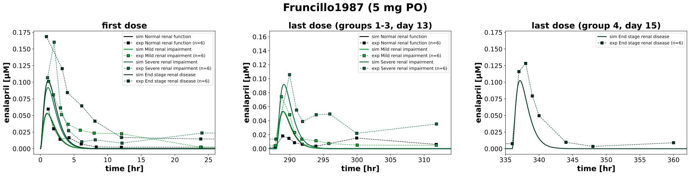
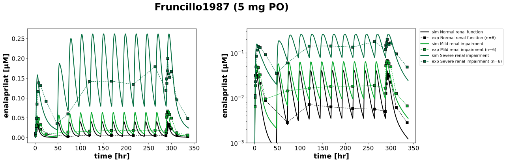
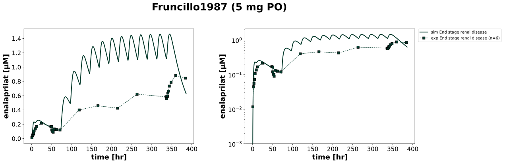
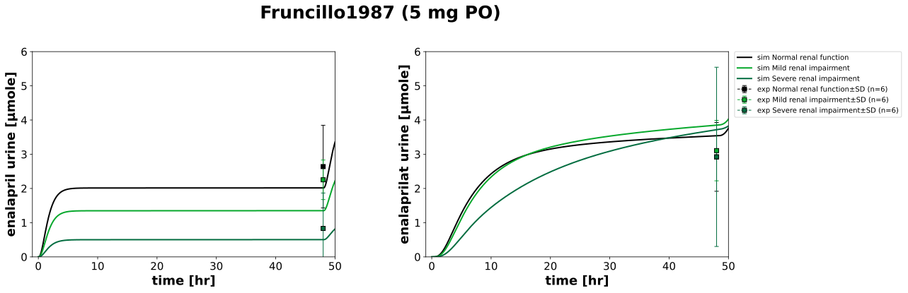

Overview
Models
| model | source |
|---|---|
| model | enalapril_body_flat.xml |
Datasets
Figures (4)








Code
"""Simulation experiment of the study Fruncillo1987."""
from typing import ClassVar, override
from pkpdsim.metadata import (
ApplicationForm,
DataType,
Dosing,
Fasting,
Genotype,
Health,
PKPDData,
PKPDMappingMetaData,
Route,
Tissue,
)
from sbmlsim import Q
from sbmlsim.data import DataSet
from sbmlsim.fit import FitData, FitMapping
from sbmlsim.plot import Axis, Figure, Plot
from sbmlsim.simulation import Simulation
from sbmlsim.units import Quantity
from pkdb_models.models.enalapril import MODEL
from pkdb_models.models.enalapril.experiments.base_experiment import (
EnalaprilSimulationExperiment,
)
class Fruncillo1987(EnalaprilSimulationExperiment):
"""Simulation experiment of Fruncillo1987.
24 hypertensive patients in four groups of the creatinine clearance (6
each, Table 1): 5 mg enalapril maleate orally on day 1 and once daily on
days 3-13 (groups 1-3, doses at 0 and 48-288 hr), or on day 1 and days
4-15 (group 4, hemodialysis, doses at 0 and 72-336 hr; dialysis of 4 hr
on day 3 and three times a week, not modelled). Serum (groups 1-3) or
plasma (group 4) for 48 hr after the first and the last dose and the
troughs before the doses (Fig1-Fig3), urine for 48 hr after the first dose
(groups 1-3, Tab3, percent of the dose). Form and food are not reported.
The renal function is the mean creatinine clearance of the group relative
to the GFR of 101 ml/min, the body weight the mean of the group:
group 1 (CLcr >= 80): 106 ml/min, 85 kg
group 2 (CLcr 40-79): 51 ml/min, 105 kg
group 3 (CLcr 10-39): 14 ml/min, 74 kg
group 4 (hemodialysis, CLcr < 5): about 2 ml/min (residual), 72 kg
"""
#: the label, the creatinine clearance [ml/min] and the body weight [kg]
#: of the groups
groups: ClassVar[dict[str, tuple[str, float, float]]] = {
"1": ("Normal renal function", 106, 85),
"2": ("Mild renal impairment", 51, 105),
"3": ("Severe renal impairment", 14, 74),
"4": ("End stage renal disease", 2, 72),
}
colors: ClassVar[dict[str, str]] = {
"1": EnalaprilSimulationExperiment.renal_colors["Normal renal function"],
"2": EnalaprilSimulationExperiment.renal_colors["Mild renal impairment"],
"3": EnalaprilSimulationExperiment.renal_colors["Severe renal impairment"],
"4": EnalaprilSimulationExperiment.renal_colors["End stage renal disease"],
}
#: the doses of the daily dosing [hr]: days 3-13 in groups 1-3, days 4-15
#: in group 4
dose_times: ClassVar[dict[str, list[int]]] = {
"1": [24 * k for k in range(2, 13)],
"2": [24 * k for k in range(2, 13)],
"3": [24 * k for k in range(2, 13)],
"4": [24 * k for k in range(3, 15)],
}
#: the dose of enalapril maleate as an amount, the recovery is a fraction of it
dose_amount: ClassVar[Quantity] = (
Q(5, "mg") / EnalaprilSimulationExperiment.Mr.enamal
)
@override
def datasets(self) -> dict[str, DataSet]:
dsets = {}
for fig_id in ["Fig1", "Fig2", "Fig3", "Tab3"]:
df = self.load_dataframe(fig_id)
for label, df_label in df.groupby("label"):
label = str(label)
if "_cumulative amount_" in label:
# mg of enalapril maleate computed by the curation, the
# recovery is used
continue
dset = DataSet.from_df(df_label, self.ureg)
if "_recovery_" in label:
# the fraction of the dose excreted in the urine
dset.unit_conversion("mean", self.dose_amount)
elif label.endswith("_enalapril"):
dset.unit_conversion("mean", 1 / self.Mr.ena)
elif label.endswith("_enalaprilat"):
dset.unit_conversion("mean", 1 / self.Mr.eat)
dsets[self.to_sid(label)] = dset
return dsets
@override
def simulations(self) -> dict[str, Simulation]:
simulations = {}
dose = Q(5, "mg") * self.Mr.ena / self.Mr.enamal # enalapril maleate
for group, (_, crcl, bw) in self.groups.items():
simulations[self.to_sid(f"ENA5m{group}")] = Simulation(
time_unit="hr",
# 48 hr after the last dose
end=self.dose_times[group][-1] + 50,
preinit_changes={
**self.default_changes(),
"BW": Q(bw, "kg"),
"KI__f_renal_function": Q(crcl / 101, "dimensionless"),
"PODOSE_ena": dose,
},
changes=[self.add_doses(self.dose_times[group], {"PODOSE_ena": dose})],
)
return simulations
def _metadata(
self, group: str, tissue: Tissue, dosing: Dosing
) -> PKPDMappingMetaData:
"""Metadata of a mapping of a group."""
return PKPDMappingMetaData(
tissue=tissue,
route=Route.PO,
application_form=ApplicationForm.NR,
dosing=dosing,
# all patients are hypertensive, groups 2-4 with renal impairment
health=Health.HYPERTENSION if group == "1" else Health.RENAL_IMPAIRMENT,
genotype=Genotype.NR,
fasting=Fasting.NR,
data=PKPDData.PK,
data_type=DataType.MEAN,
)
@override
def fit_mappings(self) -> dict[str, FitMapping]:
mappings = {}
for group in self.groups:
for sid, name in {
"[Cve_ena]": "enalapril",
"[Cve_eat]": "enalaprilat",
}.items():
mappings[self.to_sid(f"fm_ENA5m{group}_{name}")] = FitMapping(
self,
reference=FitData(
self,
dataset=self.to_sid(f"Group{group}_{name}"),
xid="time",
yid="mean",
yid_sd=None,
count="count",
),
observable=FitData(
self,
task=self.to_sid(f"task_ENA5m{group}"),
xid="time",
yid=sid,
),
metadata=self._metadata(
group,
tissue=Tissue.PLASMA if group == "4" else Tissue.SERUM,
dosing=Dosing.MULTIPLE,
),
)
if group == "4":
# no urinary excretion data in group 4
continue
# 0-48 hr after the first dose, the data point at 48 hr is
# compared with the state before the dose at 48 hr
for sid, name in {
"Aurine_ena": "enalapril",
"Aurine_eat": "enalaprilat",
}.items():
mappings[self.to_sid(f"fm_ENA5s{group}_urine_{name}")] = FitMapping(
self,
reference=FitData(
self,
dataset=self.to_sid(f"Group{group}_recovery_{name}"),
xid="time",
yid="mean",
yid_sd="mean_sd",
count="count",
),
observable=FitData(
self,
task=self.to_sid(f"task_ENA5m{group}"),
xid="time",
yid=sid,
),
metadata=self._metadata(
group, tissue=Tissue.URINE, dosing=Dosing.SINGLE
),
)
return mappings
@override
def figures(self) -> dict[str, Figure]:
return {
**self._figure_enalapril(),
**self._figure_enalaprilat(),
**self._figure_urine(),
}
def _add_group(
self, plot: Plot, group: str, sid: str, dataset: str, yid_sd: str | None
) -> None:
"""Add the simulation and the data of a group to a plot."""
label = self.groups[group][0]
plot.add_data(
task=self.to_sid(f"task_ENA5m{group}"),
xid="time",
yid=sid,
label=f"sim {label}",
color=self.colors[group],
)
plot.add_data(
dataset=self.to_sid(dataset),
xid="time",
yid="mean",
yid_sd=yid_sd,
count="count",
label=f"exp {label}",
color=self.colors[group],
)
def _figure_enalapril(self) -> dict[str, Figure]:
"""Enalapril after the first and the last dose (Fig1)."""
windows = [
("first dose", -1, 26, list(self.groups)),
("last dose (groups 1-3, day 13)", 287, 314, ["1", "2", "3"]),
("last dose (group 4, day 15)", 335, 362, ["4"]),
]
fig = Figure(
experiment=self,
sid="Fig1",
num_rows=1,
num_cols=len(windows),
name=f"{self.__class__.__name__} (5 mg PO)",
height=self.panel_height,
width=self.panel_width * len(windows),
)
plots = fig.create_plots(
xaxis=Axis(self.labels["time"], unit=self.units["time"]), legend=True
)
for kp, (title, tmin, tmax, groups) in enumerate(windows):
plots[kp].set_title(title)
plots[kp].set_xaxis(
self.labels["time"], unit=self.units["time"], min=tmin, max=tmax
)
plots[kp].set_yaxis(self.labels["[Cve_ena]"], unit=self.units["[Cve_ena]"])
for group in groups:
self._add_group(
plots[kp], group, "[Cve_ena]", f"Group{group}_enalapril", None
)
return self.figures_by_sid(fig)
def _figure_enalaprilat(self) -> dict[str, Figure]:
"""Enalaprilat of groups 1-3 (Fig2) and of group 4 (Fig3)."""
figures = []
for fig_id, groups in [("Fig2", ["1", "2", "3"]), ("Fig3", ["4"])]:
fig = Figure(
experiment=self,
sid=fig_id,
num_rows=1,
num_cols=2,
name=f"{self.__class__.__name__} (5 mg PO)",
height=self.panel_height,
width=self.panel_width * 2,
settings={"legend_scope": "row"},
)
plots = fig.create_plots(
xaxis=Axis(self.labels["time"], unit=self.units["time"]), legend=True
)
for kp, scale in enumerate(["linear", "log"]):
plots[kp].set_yaxis(
self.labels["[Cve_eat]"],
unit=self.units["[Cve_eat]"],
scale=scale,
# the measured range, 1-500 ng/ml
min=1e-3 if scale == "log" else None,
)
for group in groups:
self._add_group(
plots[kp],
group,
"[Cve_eat]",
f"Group{group}_enalaprilat",
None,
)
figures.append(fig)
return self.figures_by_sid(*figures)
def _figure_urine(self) -> dict[str, Figure]:
"""Urinary excretion for 48 hr after the first dose (Tab3)."""
fig = Figure(
experiment=self,
sid="Tab3",
num_rows=1,
num_cols=2,
name=f"{self.__class__.__name__} (5 mg PO)",
height=self.panel_height,
width=self.panel_width * 2,
settings={"legend_scope": "row"},
)
plots = fig.create_plots(
xaxis=Axis(self.labels["time"], unit=self.units["time"], min=-1, max=50),
legend=True,
)
for kp, (sid, name) in enumerate(
[("Aurine_ena", "enalapril"), ("Aurine_eat", "enalaprilat")]
):
# the dose is 10.2 µmol, the later doses are not shown
plots[kp].set_yaxis(self.labels[sid], unit=self.units[sid], min=0, max=6)
for group in ["1", "2", "3"]:
self._add_group(
plots[kp], group, sid, f"Group{group}_recovery_{name}", "mean_sd"
)
return self.figures_by_sid(fig)
if __name__ == "__main__":
MODEL.run_experiments(Fruncillo1987, output_dir=Fruncillo1987.__name__)